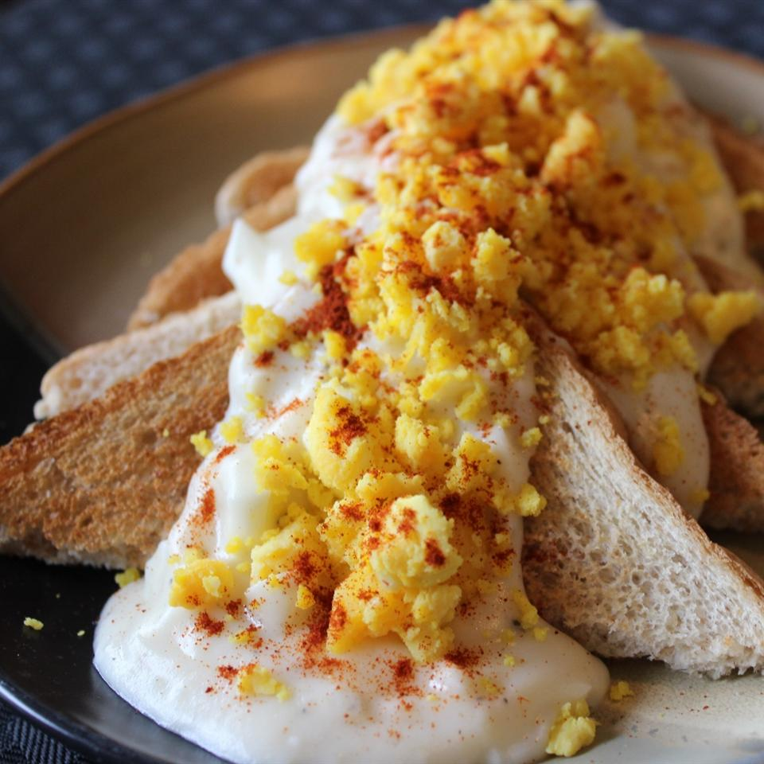

Goldenrod Egg
As seen on allrecipes

Description
This recipe is a generational French family tradition for Easter morning.
It's an easy and cozy family recipe that really grows on you!
- Cook: 15 mins
- Total: 30 mins
- Prep: 15 mins
- Servings: 8
- Yield: 8 servings
Ingredients
- 1/2 cup butter
- 1/2 cup flour
- salt and pepper to taste
- 1 quart milk
- 8 hard-cooked eggs
- 8 slices white bread, toasted
- 1 pinch paprika
Steps
- Melt butter in a large saucepan over medium heat.
Whisk in flour to make a roux, and cook, stirring constantly, for about 3 minutes.
Whisk in the milk, and bring to a simmer, stirring constantly.
Reduce heat to medium-low, and cook until thickened, 5 to 10 minutes more,
stirring occasionally. Season to taste with salt and pepper.
- Separate the hard-cooked egg whites from the yolks.
Roughly chop the whites and stir into the white sauce.
Press the yolks through a mesh strainer and set aside.
- To serve, place a slice of toast on a plate, and ladle 1/2 cup of white sauce
over top. Garnish with egg yolks and a sprinkle of paprika.